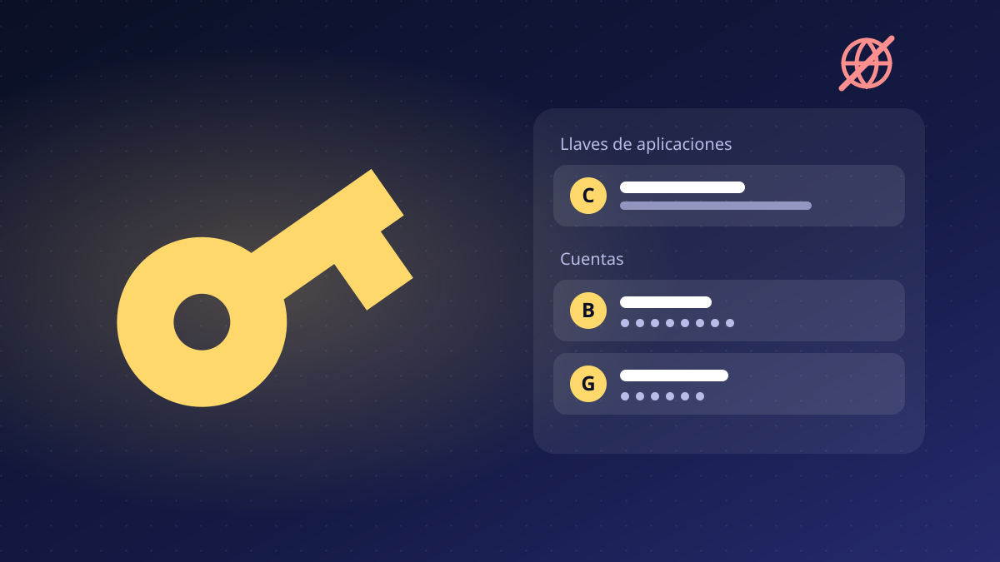

Llavero
ActivoUn gestor de contraseñas para Android aislado de Internet, como una cartera fría: guarda las cuentas de siempre y las llaves con las que se firman las aplicaciones.
Estimación. El cifrado está probado en el ordenador y la aplicación se ha recorrido en el móvil real: crear, añadir, copiar, abrir y cerrar, importar, exportar, temas y cierre automático. Falta probar en el móvil los archivos adjuntos y el cambio de contraseña maestra, y meter las llaves de verdad.
- Android
- Java
- AES-GCM
- PBKDF2
- JavaScript
- Web Crypto
- PowerShell
«Abrir en VS Code» abre el programa, pregunta en qué carpeta guardarlo y lo trae de GitHub. Si ya lo tienes en ese ordenador, ábrelo desde VS Code y pulsa sincronizar. «Editar en el navegador» lo abre al día, sin instalar nada, pero no puede ejecutarlo.
El código es privado: GitHub pedirá iniciar sesión con una cuenta que tenga permiso.

- Etapa
- Etapa 3: meter las llaves de firma reales y usarlo a diario
- Empezó
- 26 de noviembre de 2026
- Último movimiento
- 26 de noviembre de 2026
- Tamaño
- 2.473 líneas en 9 archivos de código
- Cambios guardados en git
- 2
En corto
Quien publica aplicaciones tiene que guardar bien las llaves con las que las firma: si se pierden, no se puede volver a actualizar la aplicación. Llavero nace para eso y, de paso, para las contraseñas corrientes: el correo, el banco, otras aplicaciones.
La idea es la de una cartera fría. La aplicación no pide ningún permiso, y sin el permiso de Internet Android no le deja abrir ninguna conexión. Eso se puede comprobar desde fuera: en los ajustes del móvil y mirando el paquete con las herramientas de Android. El guion que la fabrica se niega a terminar si aparece un permiso.
Todo va en un solo archivo cifrado con una contraseña maestra, que no se guarda en ningún sitio. Ese archivo se exporta y se importa en otro móvil, mezclando lo que haya, o se abre en el ordenador con una página web de un solo archivo que usa el mismo formato.
Una herramienta del ordenador recoge las llaves de firma de su carpeta, con sus contraseñas y sus fichas, y las deja en un archivo cifrado listo para importar en el móvil.
Cómo está hecho
La contraseña maestra abre un único archivo cifrado. La aplicación no tiene salida a Internet: lo único que sale es ese mismo archivo, cifrado, cuando se exporta.
Leer el esquema como texto
Elementos
- Tú. Contraseña maestra: No se guarda.
- Llavero en el móvil. Cifrado: PBKDF2 y AES-256-GCM; Lista y fichas: Cuentas y llaves; Archivo cifrado: Dentro de la aplicación.
- Fuera. Copia exportada: El mismo archivo cifrado; Internet: Sin permiso: cerrado.
- Otros sitios. Otro móvil: Importa y mezcla; Página web: En el ordenador; Llaves de firma: Empaquetadas en el PC.
Conexiones
- Contraseña maestra → Cifrado: abre
- Archivo cifrado → Copia exportada: exportar
- Copia exportada → Otro móvil: importar
- Copia exportada ↔ Página web
- Llaves de firma → Copia exportada: llaves
Una muestra de ejecución
Salida real de la prueba cruzada del cifrado, ejecutada en el ordenador el 26 de noviembre de 2026.
El cifrado de la aplicación
- Orden
pruebas\cruzada.ps1
- Prueba
BIEN el archivo no enseña nada legible
- Prueba
BIEN cada guardado sale distinto
- Prueba
BIEN abre con la contraseña y devuelve lo mismo
- Prueba
BIEN rechaza una contraseña equivocada
- Prueba
BIEN nota que han tocado los datos
- Prueba
BIEN nota que han tocado la cabecera
- Prueba
BIEN rechaza un archivo que no es un llavero
- Prueba
BIEN genera contraseñas de 24 letras distintas
La aplicación y la página web se entienden
- Nota
Java cifra un llavero de muestra y lo abre la página web; luego al revés.
- Prueba
BIEN la página no puede conectarse a Internet
- Por dentro
iteraciones de la clave: 600000
- Prueba
BIEN la página web abre lo que cifró Java
- Prueba
BIEN Java abre lo que cifró la página web
- Prueba
Todo bien.
Siguiente paso
Que el dueño cree su llavero con su contraseña maestra e importe las llaves de firma reales empaquetadas en el ordenador.
Etapas
- HechaEtapa 1: el cifrado y el formato
Una clase de Java sin nada de Android y la misma cuenta en JavaScript. Probadas las dos, y cruzadas: cada una abre lo que cifra la otra.
- HechaEtapa 2: la aplicación de Android
Candado, lista, ficha, generador, exportar, importar y mezclar, con la misma pantalla que ChitON. Recorrida en el móvil real por cable; faltan por probar ahí los adjuntos y el cambio de contraseña maestra.
- En cursoEtapa 3: las llaves de firma
Herramienta del ordenador que empaqueta las llaves en un archivo cifrado. Probada con llaves de mentira hasta verlas dentro de la aplicación en el móvil; falta hacerlo con las de verdad.
- PendienteEtapa 4: comodidades
Abrir con la huella, rellenar contraseñas en otras aplicaciones y aviso de copias antiguas.
Qué hay hecho
- Formato de archivo propio y documentado: la clave sale de la contraseña maestra con PBKDF2 de 600 000 vueltas y los datos van con AES de 256 bits en modo GCM, que además detecta cualquier cambio.
- La cabecera del archivo va atada al cifrado: si alguien rebaja el número de vueltas o cambia la sal, el archivo no abre.
- Aplicación de Android sin ningún permiso y sin bibliotecas añadidas, con tres pantallas: candado, lista con buscador y ficha.
- Pantalla al estilo de ChitON: animación de la llave al arrancar, ayuda en tres pasos con dibujos y casilla de no volver a mostrar, y un engranaje con cinco temas de colores.
- Pensada para que sea muy fácil: un solo botón grande de «Añadir», un botón «Copiar» en cada entrada y, en la ficha, solo lo imprescindible; lo demás se despliega con «Más datos».
- Dos clases de entrada: cuentas (usuario, contraseña, dirección, notas) y llaves de aplicaciones (archivo de la llave adjunto, contraseña, alias, paquete y huella).
- Exportar una copia cifrada e importarla en otro móvil. Si ya hay llavero, se mezclan: lo nuevo se añade y de lo repetido queda lo cambiado más tarde.
- Protecciones: no deja hacer capturas de pantalla, se cierra al salir y a los dos minutos sin tocarla, vacía el portapapeles a los 30 segundos y no entra en las copias de seguridad del móvil.
- Generador de contraseñas de 24 letras, sin sesgo y sin las letras que se confunden.
- Guion que fabrica el paquete sin Gradle y se niega a terminar si el manifiesto pide un permiso o el código nombra clases de red.
- Herramienta del ordenador que mete las llaves de firma, con sus fichas y contraseñas, en un archivo cifrado para importar.
- Página web de un solo archivo, sin conexión, que abre y guarda el mismo formato en el ordenador.
- Prueba cruzada automática: Java abre lo que cifra la página web y al revés.
- Probada en el móvil real por cable, pulsando desde el ordenador: crear el llavero, añadir una cuenta, copiar, cerrar y abrir, rechazo de una contraseña equivocada, importar un archivo hecho en el ordenador, exportar y abrir esa copia en el ordenador, cierre al salir y cierre solo a los dos minutos.
Qué falta
- Probar en el móvil adjuntar y sacar archivos, y cambiar la contraseña maestra.
- Importar en el móvil las llaves reales empaquetadas en el ordenador.
- Probar en otros móviles.
- Abrir con la huella dactilar, con la clave guardada en el almacén seguro del móvil.
- Rellenar contraseñas en otras aplicaciones.
- Cambiar PBKDF2 por Argon2, que aguanta mejor los ataques con tarjetas gráficas; pide una biblioteca añadida.
- Revisión del cifrado por alguien de fuera: ahora es un programa hecho en casa.
Lecciones aprendidas
- «No se conecta a Internet» vale poco si hay que creérselo. Sin el permiso de Internet lo impide el sistema, y cualquiera puede comprobarlo en los ajustes del móvil o mirando el paquete.
- Separar el cifrado en una clase que no use nada de Android permite probarlo en el ordenador en segundos, sin móvil.
- Dos programas que cifran igual hay que probarlos cruzados: que cada uno pase sus propias pruebas no dice que se entiendan.
- Al desinstalar una aplicación se pierde lo que guardaba. En un gestor de contraseñas, cambiar de llave de firma obliga a desinstalar: antes hay que exportar una copia.
- Para probar una aplicación que prohíbe las capturas de pantalla hace falta una versión de pruebas que las permita, y un seguro para que esa versión no salga por descuido: el guion de construcción la rechaza si no se le pide a propósito.
Diario
Nace al ordenar las llaves de firma de las aplicaciones. Primero se plantea como una página web sin conexión; el dueño prefiere una aplicación de Android aislada de Internet, al estilo de una cartera fría, con exportar e importar. Se escribe el cifrado en una clase de Java sin nada de Android para poder probarlo en el ordenador, y se monta una prueba cruzada con la página web: cada una abre lo que cifra la otra. Después, la aplicación entera, el guion que la fabrica y vigila que no pida permisos, y la herramienta del ordenador para las llaves. Al acabar el día se construye, pero no se ha probado en el móvil. Ya con el móvil enchufado, el dueño pide la misma pantalla que ChitON y que sea muy fácil de usar: se rehace con animación de inicio, ayuda en tres pasos, engranaje con temas, un solo botón de añadir y copiar desde la lista (versión 1.1). Se recorre entera en el teléfono, pulsando por cable; sale un fallo, que la tecla Intro abría dos veces y dejaba un aviso de error falso, y se corrige. Importar las llaves empaquetadas en el ordenador y exportar una copia que luego abre el ordenador funcionan.
Memoria para retomar
El cuaderno técnico del proyecto: lo necesario para ponerse al día y seguir.
Abrir la memoria para retomar
Qué es y qué se busca
Llavero es un gestor de contraseñas para Android que no pide ningún permiso, así que no puede conectarse a Internet. Nació al ordenar las llaves de firma de las aplicaciones que se van a publicar en Google Play: hacía falta un sitio seguro para esas llaves y, ya puestos, para las contraseñas corrientes. La idea de partida fue una página web sin conexión; se cambió a una aplicación aislada, «tipo cartera de bitcoin», con exportar e importar protegidos por la contraseña maestra.
Normas del proyecto
- Ni un permiso, ni una biblioteca.
construir.ps1se para si el manifiesto pide un permiso o el código nombra clases de red. - El formato del archivo no se cambia sin subirle la versión (
llavero-1). Lo leen tres programas: la aplicación, la página web y la herramienta del ordenador. - No dar por bueno lo que no se ha probado en el móvil.
- La contraseña maestra solo la teclea el dueño. No se pide, no se apunta y no se pasa por la línea de órdenes.
- Antes de cambiar la llave de firma de la aplicación, exportar. Cambiarla obliga a desinstalar y al desinstalar se pierde el llavero del móvil.
Cómo ponerlo en marcha
En PowerShell, en la carpeta del proyecto:
.\construir.ps1fabricasalida\llavero.apkcon el JDK y el SDK de la carpeta de datos locales, los mismos de volumen-nocturno.adb install -r salida\llavero.apkcon el móvil enchufado..\pruebas\cruzada.ps1pasa las pruebas del cifrado (necesita Edge)..\meter_llaves.ps1empaqueta las llaves de firma de la carpetallavesde Documentos en un archivo cifrado para importar en el móvil.
La llave con la que se firma la aplicación está fuera del proyecto, en la carpeta central de llaves, subcarpeta llavero.
Cómo está hecho
Cofre.java: el cifrado, sin nada de Android. PBKDF2-HMAC-SHA-256 con 600 000 vueltas y sal de 16 bytes; AES-256-GCM con iv de 12 bytes nuevo en cada guardado; la cabecera (formato, vueltas y sal) va como dato autenticado. Lee la cabecera con expresiones regulares para no depender de ninguna biblioteca de JSON.MainActivity.java: una sola actividad con tres pantallas hechas por código. El llavero abierto vive en memoria (boveda,clave,sal,iteraciones) y se pone anullal cerrar. Guardar escribe a un archivo aparte y lo renombra.onStopcierra el llavero salvo que haya un selector de archivos abierto (eligiendo).- Importar: sin llavero en el móvil, la copia pasa a ser el llavero con su misma contraseña. Con llavero abierto, se mezclan por
idy gana lo decambiadomás reciente. pc\Empaquetar.java: una entrada de tipollavepor cada subcarpeta con archivos.jks; elidesllave-más el nombre de la carpeta, para que repetir la importación ponga al día y no duplique.web\index.html: el mismo formato con Web Crypto, con política de contenido que impide cualquier conexión.
Estado al acabar el 26 de noviembre de 2026
Versión 1.1, instalada en el móvil del dueño y vacía, a la espera de que él cree su llavero.
- Probado en el ordenador: cifrado de Java, cifrado de la página, cruce en los dos sentidos y la herramienta de las llaves con datos de mentira.
- Probado en el móvil real, pulsando por cable: animación y ayuda, crear, añadir cuenta con contraseña generada, copiar, cerrar y abrir, contraseña equivocada, importar un archivo del ordenador (la llave llega con su archivo, contraseña, alias, paquete y huella), exportar y abrir la copia en el ordenador con
Prueba comprobar, botón de atrás, temas, cierre al salir y cierre solo a los dos minutos. - Sin probar en el móvil: adjuntar y sacar archivos, cambiar la contraseña maestra, borrar una entrada, importar en un móvil sin llavero.
- Los cuadros de importar, cambiar contraseña, tema y privacidad usan todavía el aspecto del sistema, no el de la aplicación.
Cómo probar en el móvil
La aplicación prohíbe las capturas. Para probar: CAPTURAS = true en MainActivity.java y .\construir.ps1 -Capturas. Al acabar, volver a false, construir sin el modificador, instalar y borrar los datos de prueba con adb shell pm clear io.github.em3ge.llavero (solo si el dueño no ha creado aún su llavero: eso borra todo). El selector de archivos del móvil no ve lo que se copia con adb push hasta que se repasa el almacenamiento: adb shell content call --uri content://media --method scan_volume --arg external_primary.
Ideas para más adelante
- Abrir con la huella, guardando la clave en el almacén seguro del móvil.
- Servicio de autorrelleno para otras aplicaciones.
- Argon2 en lugar de PBKDF2.
Proyectos relacionados
- ChitON. La primera aplicación cuyas llaves de firma hay que guardar; Llavero se fabrica con el mismo método, sin Gradle.
Texto para retomarlo con Claude
Pega este texto al empezar una sesión y Claude se pone al día.
Vamos a retomar el proyecto llavero, un gestor de contraseñas y de llaves de firma para Android que no pide ningún permiso. Antes de tocar nada, lee LEEME.md del proyecto y la memoria para retomar de su ficha en la web de proyectos. El cifrado está en Cofre.java y la pantalla en MainActivity.java. Se fabrica con construir.ps1 y se prueba el cifrado con pruebas\cruzada.ps1. Dime en pocas líneas en qué punto estamos y cuál es el siguiente paso, y espera mi visto bueno. Normas: no añadir ningún permiso ni biblioteca; no cambiar el formato del archivo sin subirle la versión; no dar por bueno lo que no se haya probado en el móvil; nunca pedirme ni escribir en ningún sitio la contraseña maestra.